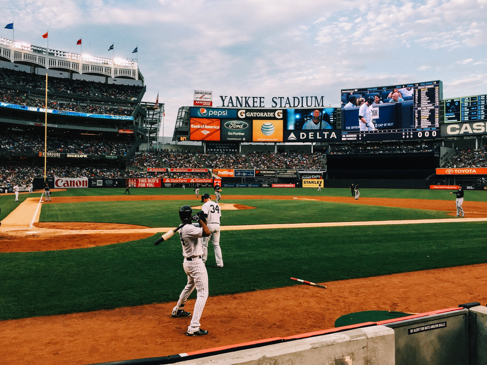

Baseball is a bat-and-ball game played between two opposing teams who take turns batting and fielding. The game proceeds when a player on the fielding team, called the pitcher, throws a ball which a player on the batting team tries to hit with a bat. The objective of the offensive team (batting team) is to hit the ball into the field of play, allowing its players to run the bases, having them advance counter-clockwise around four bases to score what are called "runs". The objective of the defensive team (fielding team) is to prevent batters from becoming runners, and to prevent runners' advance around the bases. A run is scored when a runner legally advances around the bases in order and touches home plate (the place where the player started as a batter). The team that scores the most runs by the end of the game is the winner.
The first objective of the batting team is to have a player reach first base safely. A player on the batting team who reaches first base without being called "out" can attempt to advance to subsequent bases as a runner, either immediately or during teammates' turns batting. The fielding team tries to prevent runs by getting batters or runners "out", which forces them out of the field of play. Both the pitcher and fielders have methods of getting the batting team's players out. The opposing teams switch back and forth between batting and fielding; the batting team's turn to bat is over once the fielding team records three outs. One turn batting for each team constitutes an inning. A game is usually composed of nine innings, and the team with the greater number of runs at the end of the game wins. If scores are tied at the end of nine innings, extra innings are usually played. Baseball has no game clock, although most games end in the ninth inning.

Baseball evolved from older bat-and-ball games already being played in England by the mid-18th century. This game was brought by immigrants to North America, where the modern version developed. By the late 19th century, baseball was widely recognized as the national sport of the United States. Baseball is popular in North America and parts of Central and South America, the Caribbean, and East Asia, particularly in Japan, South Korea and Taiwan.
In the United States and Canada, professional Major League Baseball (MLB) teams are divided into the National League (NL) and American League (AL), each with three divisions: East, West, and Central. The MLB champion is determined by playoffs that culminate in the World Series. The top level of play is similarly split in Japan between the Central and Pacific Leagues and in Cuba between the West League and East League. The World Baseball Classic, organized by the World Baseball Softball Confederation, is the major international competition of the sport and attracts the top national teams from around the world.